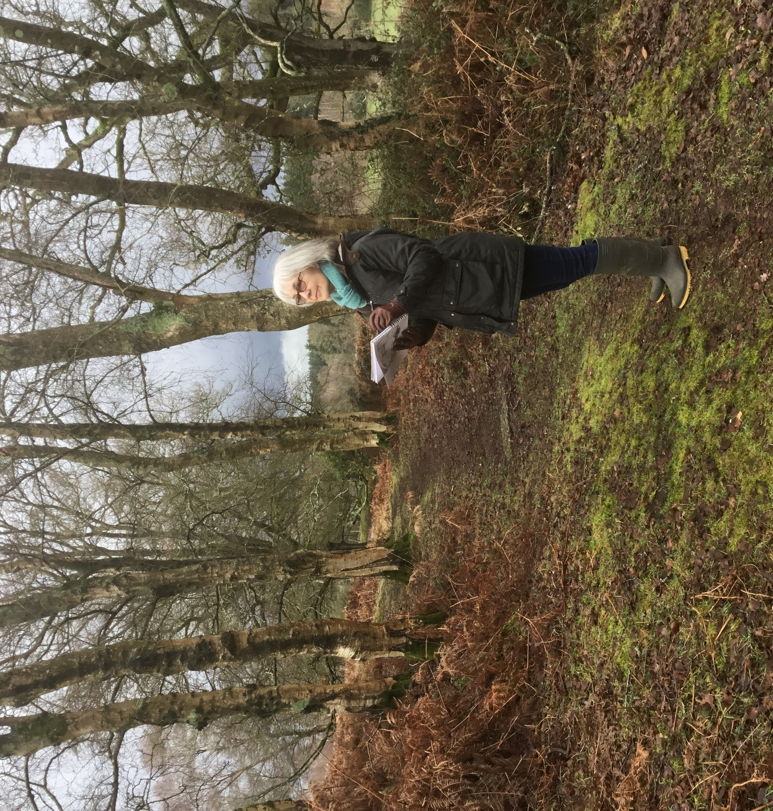

Virginia Whiting
I am primarily a painter of contemporary landscapes and seascapes having been born and brought up in rural Northamptonshire with the freedom to roam and develop the love of the countryside which has always inspired my work.

Based in Cranborne Chase for over over thirty years, I now feel a strong engagement with the rolling chalk downlands and woodlands close to my home, as well as the nearby New Forest. The rugged coastal areas of North Cornwall and Pembrokeshire, which I have visited regularly since childhood, are another deeply important influence.
Drawing on strong visual and emotional memories of these areas, as well as notes and sketches made in situ, and working mainly alla prima with a painting knife, I seek to capture the changing light, colour and atmosphere of the seasons and weather patterns in an expressive way.
A further strand to my work involves experimentation with printing techniques such as linocuts and monoprinting. More recently I have been working with oil and cold wax, an exciting and versatile medium, which offers scope for more textural techniques such as layering, sgraffito and stenciling and gives the potential for more abstract interpretations.
I am represented by the Salt Marsh Gallery in Lymington and exhibit widely in my local area. My work is held in private collections both in the UK and overseas.
o
n
t
a
c
t
Gallery